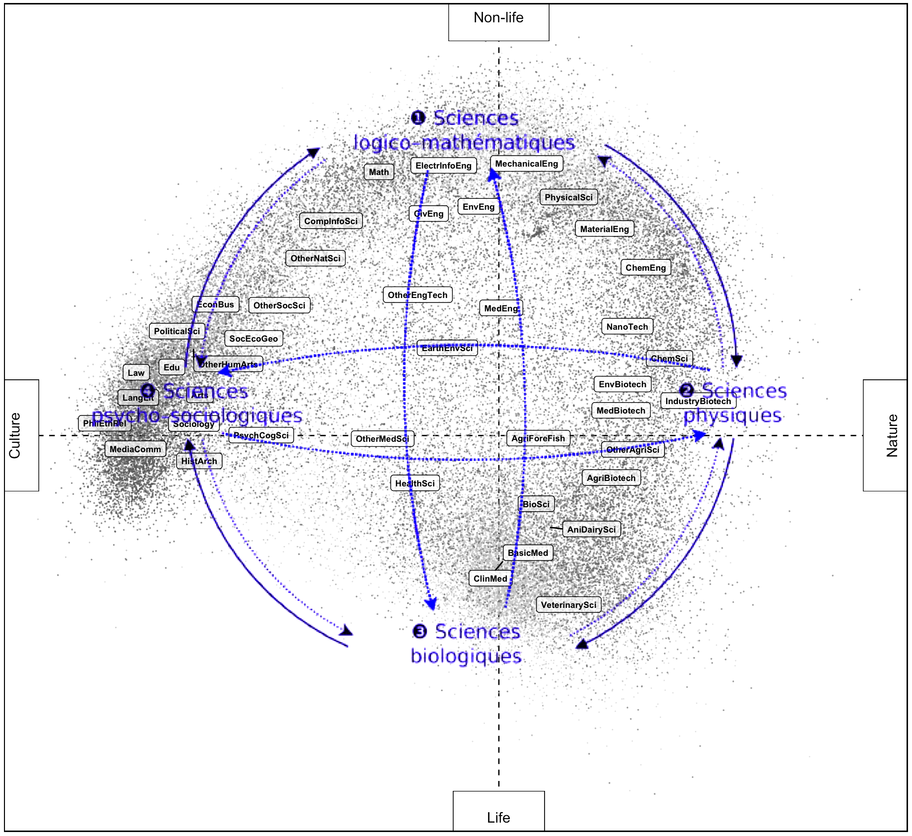

| Level | Documents | Terms | Topics | Terms per topic (mean) | Terms per topic (sd) |
|---|---|---|---|---|---|
Associations between epistemic position-takings and social variables in science
https://hlageek.github.io/reports/homology2024
1 Centre for Science, Technology, and Society Studies (CSTSS) @ Institute of Philosophy, Czech Academy of Sciences
hladik@flu.cas.cz, @hlageek@scholar.social
2 Centre for Research on social InequalitieS (CRIS) @ CNRS/Sciences-Po
yann.renisio@sciencespo.fr
Acknowledgement
- Robert Zajonc Institute for Social Studies (ISS), University of Warsaw
- Local Organisation Committee: Tomasz Warczok, Andrzej Turkowski, Tomasz Zarycki
Outline
- spaces of positions and position-takings in science
- topic model of scientific abstracts
- mapping the “disciplinary matrix”
- position-takings of scientists as projections of individual topic portfolios
- relating position-takings and social variables
- application to the field of cultural production?
TopSBM topic model of the Czech database of research outputs
Principal components 1 & 2
Principal components 2 & 3
Interpretation of topic polarity
| Topics | ||
|---|---|---|
| min | max | |
| Principal component 1 | ||
| try look refer just broader circumstance | aqueous_solution ionic nacl hydrogen_peroxide dilute hcl | |
| topic bring perspectife can_see starting_point popularity | cell cells cell_culture immunofluorescence sensitize cytometry | |
| context chapter_focus entitle viewed deepen methodologically | acid acetic_acid acids citric butyric tartaric | |
| political politics democracy democratic civic president | diameter diametr lcft | |
| institution informal insider guarantor brochure proprietor | concentrations citrate diffusive turbidity c12 bioaerosol | |
| academic field_study seminar university_olomouc doctoral palacky | cellulose chitosan water_soluble encapsulation encapsulate insoluble | |
| interpret opinion answer every_day undergone affiliation | dsc styrene differential_scanning scanning_calorimetry vinyl propylene | |
| reader theme inspiration author_describe historical_context work_czech | bacteria bacterial agar bacterium prokaryotic proteobacteria | |
| perspective deal_issue ban reasons particularity mankind | temperature temperatur increase_temperature temperature_degree homogenisation nucleate | |
| reflect methodological increasingly gradual study_also key_factor | strain strains homemade straind astrain difussion | |
| Interpretation | Culture | Nature |
| Principal component 2 | ||
| prevalence | quasi circular shaped shells dimensionally aproximation | |
| adipose_tissue insulin_resistance leptin visceral adiponectin adipocyte | numerical numerical_method numerical_result kirchhoff tearing bem | |
| ovarian hormonal testosterone progesterone contraception postmenopausal | solution solve_problem considered vmo solutio solutin | |
| sperm motility spermatozoa seminal infertility seman | models obtain_use modell model_describe extrapolation modelled | |
| sex vertebrate dimorphic dorso vertebrates hominid | dynamic describing dynamická thedynamic | |
| gastric cyst gastrectomy villous fpc nen | simulation simulation_model computer_simulation use_simulation simulace solidworks | |
| mammal rodent apodemus rodentia glareolus flavicollis | operating prototype labview spool rockwell shc | |
| elisa sera gondii toxoplasma serological toxoplasmosis | model model_use model_base simplified use_model model_can | |
| germ ovary testicular testes testis pharyngeal | systems system_use system_paper subsystem base_approach paperpresent | |
| female pubertal bouts ella tong rodrigues | real describe_method analysis_paper use_real dial inattention | |
| Interpretation | Life | Non-life |
| Principal component 3 | ||
| pottery neolithic ware eneolithic beaker funnel | randomly consecutive compromise uncontrolled assigne slowe | |
| castle prague_castle cheb chrudim slovakian stará | duration controls fewer unrelated sustained inconclusive | |
| parish chapel sacral romanesque dominican catherine | diagnosis diagnose pathological pathology differential_diagnosis time_interval | |
| moldanubian feldspar biotite muscovite amphibole calc | involved result_study statistical_analysis immediately underly profiling | |
| painting paint virgin canva badge photographical | disorder disorders neurodevelopmental neurodevelopment pharmacoeconomic dbt | |
| příbram microprobe apfu jáchymov supergene chalcopyrite | match | |
| garnet metamorphic granulite metamorphism monazite amphibolite | adjust specificity routine pace poole expired | |
| recycle demolition recycled lightening fra rubble | multiple termination hereafter clipping lop meto | |
| danube dolní ivory retouch brickyard hron | patient patients pediatric patient_treat enrol group_patient | |
| bohemian bílá brandýs lomnice lipník železný | risk_factor morbidity_mortality associate_increase control_study cause_death epidemiologic | |
| Interpretation | Materials | Methods |
Projection of individual scientists
Jean Piaget’s map of the sciences

Source: Raphaël Sandoz, Interactive Historical Atlas of the Disciplines, University of Geneva
Consensus map of science

Source: Klavans, Richard, and Kevin W. Boyack. 2009. “Toward a Consensus Map of Science.” Journal of the American Society for Information Science and Technology 60 (3): 455–76. https://doi.org/10.1002/asi.20991.
Articles
Team science
Gender in science
Czech Academy of Sciences
Hospitals
Art schools
Principal investigators
PIs in applied research
PIs with government funding
Sneak peek - field of cultural production
Sneak peek - field of cultural production
Sneak peek - field of cultural production
Sneak peek - field of cultural production

Homology in field analysis (II), May 23-24, 2024